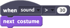

Execute um script quando o valor de um dos sensores do PicoBoard torna-se maior (ou menor) que um valor especificado.

Mude a fantasia do ator cada vez que você bater palmas.

Você pode selecionar um dos sete sensores do PicoBoard. Cada um deles informa um valor entre 0 e 100.
O PicoBoard vem com quatro grampos do tipo jacaré que podem ser conectados às entradas A-D. O valor do sensor de resistência depende da quantidade de resistência elétrica que há entre as extremidades de metal dos grampos.

Você também pode selecionar uma comparação maior ou menor que no segundo menu suspenso.